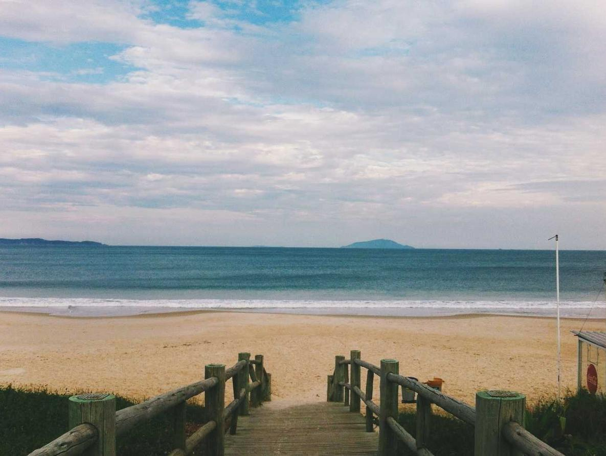
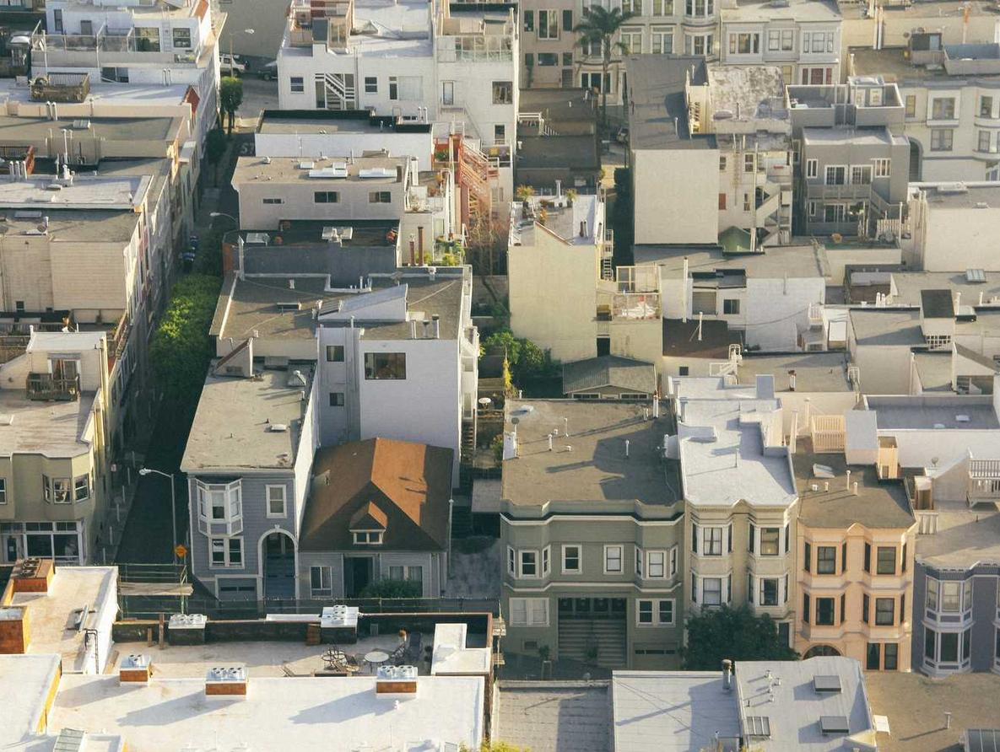

Graafinen työ:
Logo on räätälöity versio alkuperäisestä "safka.online":ssa käytetystä logosta joka sisältää "E" kirjaimen.
Logoja tein 4 eri kappaletta, kokoina "28px", "48px", "128px", ja "168px", eri käyttötarkoituksiin esimerkiksi chrome web storen sisällä
Alla näkee itse lisäosan Wilman työjärjestys sivuilla, tuote toimii tällä hetkellä vain edu.turku.fi, sekä microsoft365.com sivustoilla.
2 / 3

Paikkaapitävä kuva
3 / 3

Paikkaapitävä kuva
❮
❯
Tietoa projektista:
Sivuston ideana on luoda jossain vaiheessa kotisivusto johon voi johdattaa Chrome Web Storesta ihmisiä ja kertoa paremmin projektin tarkoitus.
Alkuperäinen syy itse lisäosaan tuli luokkalaisten tekemästä sivustosta josta näkee ruokalistan, ajattelin että näkisi sen myös Wilman yhteydessä.
Yhteystiedot